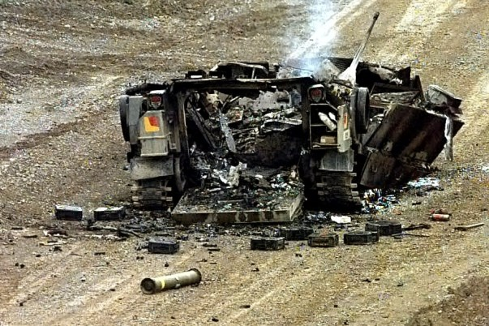

2015-08-08 00:05:00
我自己最早的记忆是六岁时的一幕，在那之前的童年都已忘得一乾二净，所以后来有了小孩之后，观察他的心理成长对我是一个全新的学习经验。在阅读一些参考书籍并和教育人员交流之后，大家的共识是一般小孩到两岁左右才发展出人我之间的差别认知，所以美国人有所谓“Terrible Two's“（”恐怖的两岁“）的说法，就是因为两岁小孩什么东西都说是”我的“，并且会因此而哭闹不停。到了三岁，脑部才有了解（但还是不能分析）因果关系的基本概念，所以会开始到处问”为什么“。但是因果分析及自制能力要到六岁才因前额叶（Frontal Lobe）的发展而开始有了雏形（但是要到20多岁才完全长成；情绪中心反而在青春期后来居上，主导了中学生的行为）；在此之前，小孩是不懂得要牺牲眼前所得以换取更大的长期利益的。所以我也就一直等到小孩六岁之后才跟他讲理（并且教他数学），因为我知道在那之前是纯粹浪费口舌。
扯了这么远，其实和今天的主题没有关系；只是最近台湾的大新闻就是高中生反课纲活动，很多读者一副心痒难搔的样子，若不是我最近对离题的留言大力打压，只怕人人都要往那个方向扯。为了一劳永逸，我在此澄清：是的，这是无知学生受野心政客鼓动，成为夺权造势的打手，所用的藉口可笑至极。那么为什么我不想让大家在留言栏讨论呢？因为这些学生连“为什么”都不知道问，他们的行为只有两岁智商的水平；而这个部落格讲究的是事实与逻辑，所以至少要六岁以上智商的行为才值得讨论。在此请大家尊重规则，一同维护讨论的水准，不要离题去谈反课纲。
好，言归正传，我在前一篇文章的正文和留言栏里提到，十年之后共军的装备将大致达到美军的檔次，双方将平分秋色、各擅胜场，结果有读者反应说我的看法是“乐观”的。当然熟悉我思考和写作风格的人应该知道我做的结论都是以客观事实经过严谨逻辑分析的结果，没有主观意见的余地，否则我会明白标示为“猜测”。我想一般读者对近年来各国的军事发展不熟，所以不能看出这个实力消长的交叉点；既然我已经对共军未来十年的发展做过多次详细的讨论，现在必须提供给读者的就是有关美军的资讯。美军的装备发展要比共军公开得多了，这些资讯其实网络上都很容易找得到；我在此之前一直没有做系统性的介绍，是因为我对军事问题的兴趣不在这些细节上，而在于它们对战略政略形势的影响，即以前提过的”好读书，不求甚解“。现在硬着头皮写简介，欢迎读者指正错误；不过我相信任何失误都会是枝微末节，无关宏旨。某些大陆网友特别喜欢吹毛求疵，然后无限上纲，颠倒因果；希望不要在这里看到这种非理性、反逻辑的论述。
我们从陆军谈起。美军现有的M1坦克是1972年美德合作的MBT-70计划拆伙之后开始研制的，1980年服役，原本其战力相对苏军坦克并没有完整的代差（尤其是T-80），一直到1986年升级为装备了德国Rheinmetall为Leopard 2所开发的120毫米滑膛炮（美军编号M256，其实德国人在1979年就做出来了）的M1A1，才能在1991年海湾战争中完胜伊拉克的T-72（1990年开战前用特别预算将所有参战的M1紧急升级为M1A1）。目前M1A1仍然是美国海军陆战队的现役装备，美国陆军则使用小幅升级了防护能力的M1A2，当前两者都没有开发新坦克的计划。即使美国在明年（可能性远小于0.1%）就开始研发下一代坦克，至少也要14年（1986-1972=14；实际上近年来美国武器研发所需的时间和金钱都已成指数上涨）即2030年才能大功告成；而共军最新的99式改型至少已经与M1A2相当（指其战斗性能；其重量轻了9吨，航程也较高，却便宜很多，其实是更佳的產品），96A式的性能也与M1A1类似（其实重量轻了19吨，航程也较高，价钱更是白菜级的），下一代的两人制坦克应该会在5-10年内开始量產，2025年时共军将对美军坦克形成代差优势。
美军现役的步兵战车是M2 Bradley，在1981年开始服役，和M1一样是超重而且极贵的產品，但是M1至少在性能上还算是先进的武器，M2却因为大量使用了铝合金装甲来减重，有非常不幸的易燃特性，国际上一般认为它是一个完全失败的產品，外销客户只有一个，即财大气粗又必须给美国人面子的沙乌地阿拉伯。共军最新的ZBD-04A（参见前文《又见朱日和》）技术指标与其相似，但是在火力、机动力和防护力等三项主要战斗性能上都略胜半筹。与坦克同样，美军完全没有研发新型步兵战车的计划，所以共军的优势在未来十年只会越来越大。
被撃中后引发大火烧成废料的M2A2。
美军和国军现役的自走榴弹炮都是1963年开始服役的M109。因为它使用的火炮年代过于久远，没有採用Bull博士发明的ERFB（Extended Range，Full Bore）技术，所以在射程和精度上和现代火炮完全无法相比，现在欧洲国家都早已换装德制的PzH-2000或英制的AS-90。美国陆军在1995年也开始研发替代用的XM-2001，结果因为严重超支、严重超重和严重落后进度而在2002年（读者可以猜猜看XM-2001原定在哪一年服役）被砍掉。同年美国陆军宣布开始研发“未来战斗系统”（Future Combat System，FCS），其中包括新式的坦克、步兵战车和自走榴弹炮，结果同样在7年后的2009年因为严重超支、严重超重和严重落后进度而被砍掉，从此陆军不敢再要求为装甲车辆换代。共军现役的PLZ-05已经比M109先进一代；据称更新一代的底盘、自动装弹机和电子系统都已开发完成，那么共军换装就只是时间问题。
以上提及的美军现役作战车辆都是30年以上的老古董，而且换代的计划已经屡次因为美国军工企业无法在合理的时间、价钱和重量范围内完成性能达标的產品而绝望，那么美国陆军有没有新式的现代重装备呢？有的，那就是2002年开始服役的八轮M1126 Stryker步兵攻击车（Infantry Assault Vehicle，IAV），在阿富汗和伊拉克都相当成功，广受美军士兵喜爱，共部署了4400多辆。可是Stryker其实是加拿大制的，加拿大自己的编号是LAV III，1991年开始研发，1995年服役。为什么加拿大人只花了四年就开发完成呢？因为他们其实只从瑞士的MOWAG公司买了Piranha III的设计，稍微修改了一点，换上自己的型号而已。换句话说，美军现役唯一的新式装甲车是欧洲20多年前的设计，由加拿大代工生產，所以才没有超支、超重和落后进度的问题。共军的八轮装甲车当然是自己研发的，性能与Stryker相当，价钱却绝对不到其（500万美金）1/3，所以一样也已大量部署。
为什么美国陆军和海军陆战队威名显赫，其重装备却可以如此不堪？这除了美国的宣传战力之外，还有两个原因：首先美国人只挑中东的三流对手打陆战，连军工发展已经迟滞25年的俄国这样的二流陆军占领Crimea后都不敢有所反应；其次现代美军的标准陆战战术是以坦克前进到与敌人接触之后，稍作后退，等待步兵并呼叫空军飞机或陆军自己的直升机来把敌方防线炸个稀巴烂（亦即“空地一体战”，参见前文《当代美国战略局势与策略》），所以坦克首重防护力，IAV首重机动性，炮兵（包括火箭炮）可有可无，现有的装备因此基本够用。
所以美国最重要的陆军武器其实是直升机，在这方面他也的确领先世界，其代表之作就是国军也有的Apache。不过我们退一步研究一下就会发现Apache是在1986年开始服役的，比它稍晚的Comanche计划从1982年开始，到2004年终于被砍，原因大家现在应该可以猜得出：严重超支、严重超重和严重落后进度（所谓无人机可以取代直升机是个吃不到葡萄说葡萄酸的下台阶；君不见Apache的新型号仍然层出不穷？Comanche并不是超轻型侦察直升机，而是隐身的侦察兼攻击直升机，稍为放大就可以为Apache换代）。而这个29年旧的Apache直升机的价钱也在近年经歷了指数上升，2010年给印度的报价单（参见美国官方文件http://www.dsca.mil/major-arms-sales/india-support-direct-commercial-sale-ah-64d-block-iii-apache-helicopters；国军的价钱是绝对机密，但是只会高不会低）已经达到14亿美元只买22架AH-64D Block III（后来改名为AH-64E），也就是6400万美元一架。共军的WZ-10在电子、结构和武器上都已与Apache同级（但是价钱必定低了几倍），真正的差别只在引擎上；中国已有多型涡轴引擎在开发之中，五年之内就应该能赶上AH-64E所用的T700-701D的1487KW。此外我以前已经提过，直升机只有在己方拥有空优的前提下才有意义，台海战争中的空优谁属我在下文再为大家细数。